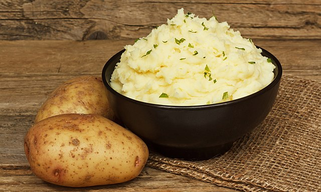

Mashed Potatoes

Recipe Description
Stringy, cheesy, warm and fuzzy mashed potatoes
This easy-to-follow and cheap recipe is the only one
you'll ever need to make the best mashed you or your
friends will ever taste.
Ingredients
- 2 lb Yukon Gold potatoes (905 g)
- ½ cup whole milk (120 mL)
- ½ cup heavy cream (120 mL)
- 8 cloves garlic, crushed
- ½ cup unsalted butter (115 g), cubed, cold
- 2 teaspoons kosher salt
- freshly ground black pepper, to taste
- finely chopped fresh chive, for serving
Steps
-
On a cutting board, peel the potatoes. Place the potatoes in a large bowl of cold water after peeling to avoid discoloration.
-
Cut the potatoes into 1-inch (2 cm) cubes.
-
Add the potatoes to a large pot and cover with cold water. Bring to a boil over high heat, then reduce the heat to low and simmer for 12 minutes.
-
In a small saucepan, bring the milk, heavy cream, and garlic to a simmer over low heat.
-
Remove the pot from the heat and strain the cream through a fine mesh sieve.
-
Drain the potatoes in a colander and transfer back to the pot.
-
Mash the potatoes with a potato masher, potato ricer, or by pushing through a fine mesh sieve with a spatula.
-
Add the cubed cold butter and salt. Stir to combine.
-
Gradually add the cream mixture to the potatoes, little by little, until fully incorporated.
-
Top with freshly ground black pepper and sprinkle with chives and serve.
-
Enjoy!